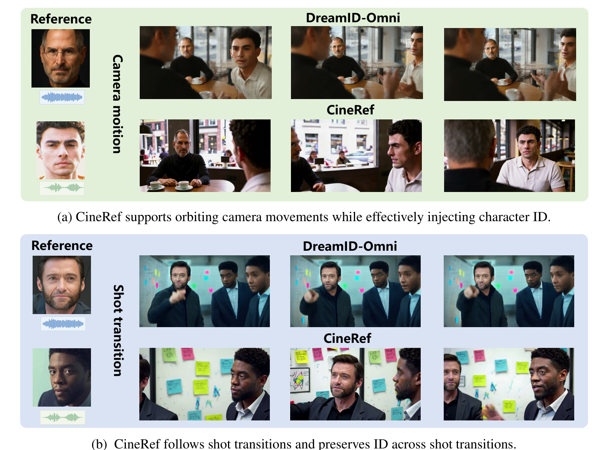
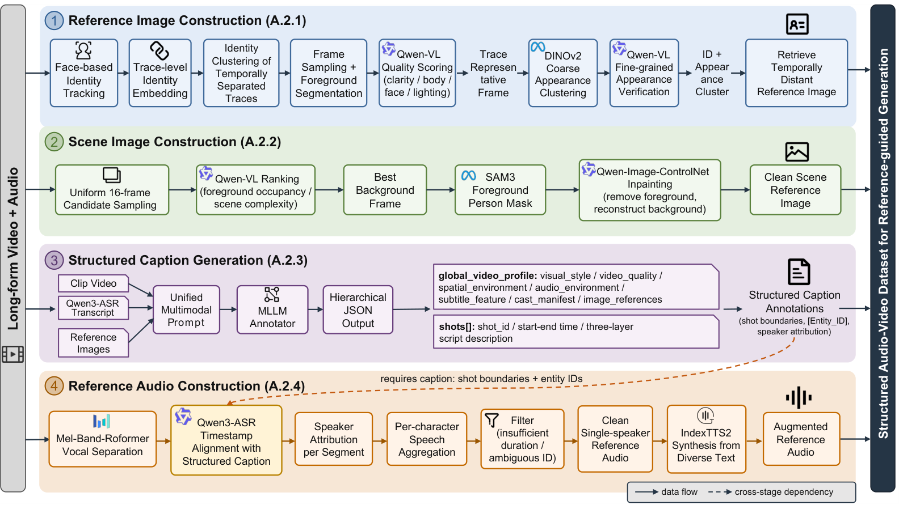

CineRefCinematic Reference-Guided
Audio-Video Generation
Preserve the person. Bind the voice.
Keep the story consistent.
From reference images and voices to cinematic videos —
across camera motion, changing viewpoints, and shot transitions.
Same references. Three approaches.
Compare LTX-Ingredients, DreamID-Omni, and CineRef using the supplied outputs for each sample. Reference images and voices are shown together above the three videos.

References are more
than conditions.
Reference-guided audio-video generation should preserve who appears and who speaks, even as the camera moves and the shot changes. Treating references as passive conditioning can lead to identity drift, copy-and-paste artifacts, and unreliable visual–audio correspondence.
CineRef explicitly links references to generated content during training and preserves them across the entire clip. The goal is consistent identity and voice, with natural content across cinematic changes.
Built for cinematic reference following.
Paired single-shot and multi-shot variants
with diverse camera motion.
Explore the dataset construction pipeline

CineRef paper.
The paper link will be added here.